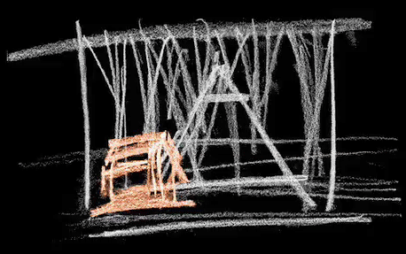
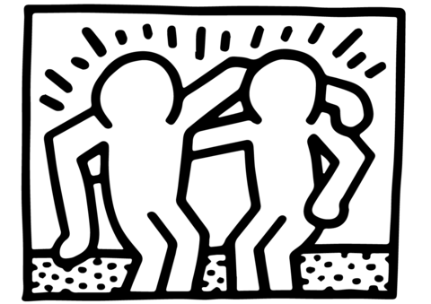

| M|W 9|11 – creator, animator | Aniboom Virtual Studios – focomoso |
| Made for the 9-11 It's Been Ten Years project for Gideon Amichay and the Aniboom Virtual Studios, M|W 9|11 is a one minute animated short about what happened on 9-11 to two very familiar characters. Winner of the Jury Commendation for Filminute 2012. |
| This is Not a Film – creator, animator | Foundation Magritte – focomoso |
| Created in collaboration with the Foundation Magritte, a 3d animated short that takes us on a surreal ride through the paintings of Belgian surrealist René Magritte. |
| BIPED – technical director, animator | Merce Cunningham Dance Company |
| With Merce Cunningham and Paul Kaiser. Dancers perform live behind a giant projection of gestural drawings mapped onto motion captured data of the same dancers. Widely performed throughout the world including Lincoln Center and BAM. |
| Ghostcatching – technical director, animator | Riverbed Group |
| With Bill T. Jones and Paul Kaiser. The movements of dancer Bill T. Jones were captured, mapped onto computer generate line drawings and projected onto four walls. Shown at FIT. |
| Hand-drawn Spaces – technical director, animator | Riverbed Group |
| With Merce Cunningham, Paul Kaiser and Shelley Eshkar. Motion-captured hand-drawn figures perform intricate choreography in 3D. Premiered at SIGGRAPH, it was recently designated a masterwork by the NEA. |
| Robert Wilson: Visionary of Theater – programmer, animator | Riverbed Group |
|  | With Paul Kaiser as part of the Riverbed Media Group. An interactive, multimedia documentary of the early works of experimental theater artist Robert Wilson, Visionary creates an interactive landscape as varied and haunting as Wilsons own work. |
| Keith Haring Interactive – programmer, animator | Keith Haring Foundation |
|  | With the Riverbed Media Group and the Keith Haring Foundation. An interactive exploration of Haring's work where people fly through tessellated spaces, meet Keith’s characters and mix and match drawings to create their own. |